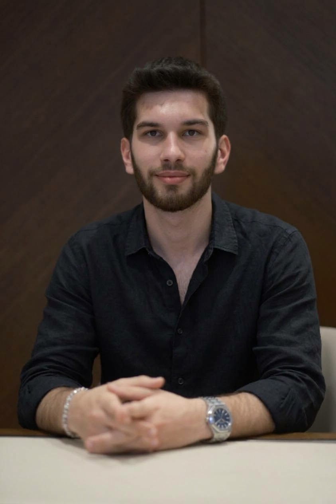

Boray
Kaşkavalcı
I study mechanical engineering at Yaşar University in Izmir, with a focus on design, analysis and problem solving. I have interned at ZF Lemförder and work with clients as a luxury watch specialist.
About

Mechanical Engineering student at Yaşar University with working knowledge of AutoCAD, Fusion 360 and MATLAB, backed by coursework in mechanical design, manufacturing processes, thermodynamics, heat transfer, materials science and energy efficiency. Completed an internship at ZF Lemförder and has two years of customer-facing experience as a Luxury Watch Specialist.
- Program
- B.Sc. Mechanical Engineering, since 2022
- University
- Yaşar University, Izmir
- Internship
- ZF Lemförder, August 2025
- Languages
- Turkish, English, German
- Looking for
- Internships and entry-level mechanical engineering roles
Education
Yaşar University
B.Sc. Mechanical Engineering, Izmir, Türkiye
- Used AutoCAD, Fusion 360, MATLAB and Microsoft Office in coursework and engineering projects.
- Went in depth on mechanical design, manufacturing processes and energy efficiency.
Coursework
Bilfen Science High School
High School Diploma
- Graduated with a 90 grade average.
Experience
Mechanical Engineering Intern, ZF Lemförder
Izmir, Türkiye
- One-month internship at an automotive supplier, gaining exposure to an industrial manufacturing setting.
Luxury Watch Specialist
Client sales and sourcing
- Process high-volume, high-value sales transactions accurately and with close attention to detail.
- Guide clients on product choice, pricing and availability, and close sales through a consultative approach.
- Sourced requested watches for clients within one week, coordinating with suppliers.
- Maintain long-term client relationships and follow up after every sale.
- Handle multiple client requests in parallel while keeping each transaction organised and on time.
Skills
Design and CAD
Core engineering
Manufacturing and quality
Programming and analysis
Sales and client work
Project management and office tools
Personal strengths
Languages
Certifications
Contact
Open to internships and entry-level mechanical engineering opportunities.
- Emailboraykaskavalci@gmail.com
- Phone+90 535 366 39 26
- LinkedInlinkedin.com/in/boray-kaşkavalcı
- LocationIzmir, Türkiye
Download my CV
One page, plain text layout, PDF.